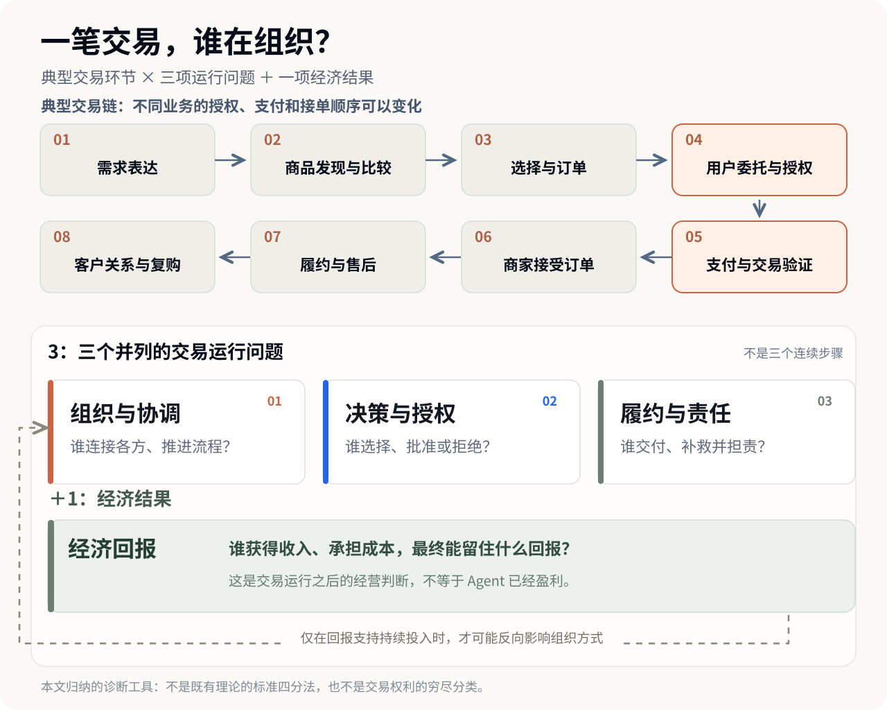
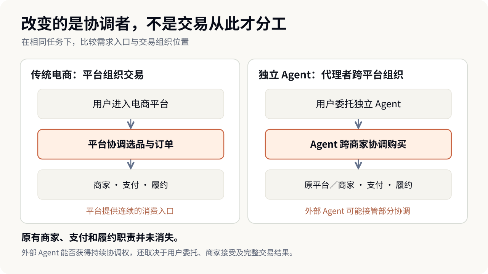

2026 年 11 月，OpenAI 发布了 ChatGPT Wallet。用户可以让 AI 帮自己寻找商品、准备订单，再通过保存的银行卡完成购买。几个月前，阿里已经把千问与淘宝、天猫的商品和交易体系连接起来，让消费者通过自然语言搜索商品、比较价格和管理订单。支付宝则在推进另一类能力：它不一定替用户选择商品，却希望让不同平台上的 Agent 获得支付能力，并解决 Agent 身份、商业授权和交易验证问题。
这些变化容易让人得出一个结论：AI 开始接管购物，电商平台可能要失去交易入口了。
但这里有两个不同的问题。AI 能不能替用户购买商品？在部分受支持场景中，已经可以。当 AI 能够组织一笔交易，原有平台究竟失去了什么？ 这个问题远没有那么简单。
传统电商从来不是一个平台独自完成所有交易。商家管理商品和库存，支付机构处理付款，银行参与资金授权，物流公司负责交付，消费者决定是否购买。平台的价值，部分来自它把这些参与者组织在一起，并成为消费者进入交易的主要入口。
Agent 改变的不是交易第一次出现多方分工，而是消费者有机会通过独立代理者重新组织原有交易能力。 这种新协调方式能否持续，以及由谁获得商业回报，才是 Agentic Commerce 值得研究的问题。
一、AI 开始替用户付款，但交易并没有因此属于 AI
ChatGPT Wallet：从商品推荐进入真实支付
OpenAI 2026 年 11 月 13 日的产品公告明确，ChatGPT Wallet 首期通过 Dots 向美国符合资格的成年 Pro 用户逐步开放。用户保存合格的支付卡后，Agent 可以在结账时使用与银行卡关联的令牌化支付凭证，而不接触实际卡号。当前流程仍要求用户检查商家、商品、总额与银行卡，并完成安全验证。
Wallet 服务条款预留了提前授权的合同安排，但条款允许不等于当前面向所有用户开放无监督购买。产品公告描述的逐笔安全确认，与未来更广的持续委托能力，需要分开讨论。
更重要的是，Wallet 没有让 OpenAI 成为商品卖方。发卡机构仍决定是否批准支付，商家决定是否接单，并负责商品、交付、退款和售后。用户批准提交订单，也不保证商家最终接受。Wallet 证明 AI 平台开始进入真实交易执行环节，却不能证明 OpenAI 已经取得整笔交易的控制权。
千问：把 AI 接入已有的消费生态
阿里采取了不同路线。2026 年 1 月，千问开始连接淘宝、淘宝闪购、支付宝、飞猪和高德等服务。同年 5 月，阿里宣布将千问连接到淘宝和天猫超过 40 亿件商品，并在淘宝 App 内上线千问购物助手。相关能力覆盖商品搜索比较、下单、订单管理、物流及售后。阿里巴巴 5 月 11 日官方公告对此有具体说明。
这不是给淘宝增加聊天框那么简单。阿里已经拥有商品目录、商家关系、订单系统和履约网络。千问可以调用既有能力，而不像一个独立 AI 平台那样从头寻找商品供给和结账服务商。
OpenAI 从 AI 消费入口向外连接商家和支付网络；阿里从既有消费生态内部整合 Agent 能力。两种路线显示了不同的起点，但谁真正增加了交易、保留了客户，还需要另行验证。
二、一笔交易由谁组织？先看传统电商，再看 Agent
判断 Agent 带来了什么变化，必须先看没有 Agent 时，一笔交易如何完成。
传统淘宝购物中，一笔交易由多个主体共同完成：
| 参与者 | 主要职责 |
|---|---|
| 电商平台 | 商品搜索与推荐、交易规则、订单管理和平台内协调 |
| 商家 | 商品、价格、库存、是否接单，以及商品交付相关义务 |
| 支付机构、银行与支付网络 | 支付处理、资金授权与结算 |
| 物流服务商 | 仓储、运输和配送 |
| 商家与平台 | 按各自规则承担售后、退款和争议处理 |
它们原本就不是同一个权力主体。
消费者之所以感觉自己只在一个 App 里购物，是因为平台承担了大量协调工作：把商品、商家、支付、订单状态和售后组织到连续体验中。平台的优势不只是入口，还来自真实交易所需的数据、规则和商业关系。
假设用户不打开淘宝，而是向独立 Agent 提出需求：「找一台适合视频剪辑、价格不超过 8000 元、这周能够送达的电脑。」Agent 可以跨商家搜索，比较配置、价格、库存和配送条件，再准备订单、请求授权并发起付款。商品仍可能来自淘宝，支付仍需要银行批准，履约仍由商家负责；但需求理解、跨商家比较和部分交易协调工作，可能已经由平台之外的 Agent 承担。
同一条交易链，三个分析视角
下面这张主地图同时适用于传统电商和 Agent Commerce。它不是 Agent 创造的新交易环节，而是我们比较由谁协调、谁能决策、谁承担责任、谁取得回报的共同基线。

这里的顺序是分析用的典型路径，不是所有交易都必须遵循的固定技术流程：用户可以在搜索前授予长期权限，具体支付授权和商家接单的先后也可能因业务模式不同而变化。
| 观察维度 | 要回答的问题 | 例子 |
|---|---|---|
| 控制权 | 谁可以决定、批准或阻止交易？ | Agent 推荐商品，商家仍可以拒绝订单 |
| 责任 | 出错后谁承担履约或赔付义务？ | 支付机构处理支付风险，商家负责商品售后 |
| 经济价值 | 谁获得收入、降低成本或留住客户？ | Agent 影响选择，商家仍获得商品销售收入 |
同一企业可能同时承担多个环节，同一环节也可能由多方完成。不能从「用户在 ChatGPT 里买了商品」推出「OpenAI 拥有整笔交易」，也不能因为订单仍在淘宝履约，就认为外部 Agent 不可能影响原平台的商业地位。
真正变化的是协调关系

这组对照要区分三种变化。需求入口变化是用户先向谁表达购买意图；交易协调变化是谁跨商家组织选品、订单与付款；代理决策变化是用户是否把选品、时机甚至预算范围内的决定委托给 Agent。三者可能一起发生，也可能只发生其中一项。
此前在《Personal Agent：当 AI 开始长期接手你的事》中，讨论的是用户把一类事务长期交给 Agent 后，如何持续跟进未完事项并协调不同应用和相关方。本文沿用的是“用户委托 Agent 组织跨服务任务”这一前提，进一步研究当委托进入商品选择、资金授权和真实交易后，商家、支付机构与原有平台的职责边界如何变化。两篇文章相关，但研究对象不同：前者关注个人事务能否被持续接手，本文关注交易链如何被重新协调。
此前在《AI 正在把“使用软件”和“操作软件”拆开》中讨论过：用户不再亲自操作软件，不代表软件已经消失。在交易里，这个区别还要进一步延伸到订单、付款、履约与客户关系。
三、阿里与蚂蚁，正在争夺交易链的不同位置
沿交易链观察，中国市场有两条可以协同、却并不相同的路线。阿里利用已有消费生态整合 Agent 交易，蚂蚁则尝试让不同 Agent 获得跨平台支付与信任能力。
阿里：把 AI 入口连接到供给和履约
阿里已经拥有商品目录、商家运营、交易数据和订单物流体系。千问接入淘宝商品后，可以把自然语言需求转化为既有商品和订单能力的调用，减少跨平台接入摩擦。商品缺货、配送延误、退款等真实状态，又能够约束 Agent 后续行动。推荐能力只有连上这些业务系统，才能持续完成购买任务。
这一路线能够减少部分协调成本，但不自动创造新增 GMV。如果消费者原本就会在淘宝购买，只是改由千问发起订单，集团不一定增加收入。千问仍需证明能提高转化、创造新增需求或降低全链路交易成本。
蚂蚁：为跨平台 Agent 提供可信交易能力
支付宝 AI 付开发者概览同时覆盖 AI 服务如何收费与 Agent 如何付款：Vibe Pay 面向 AI 应用收款，Skill Pay 处理技能收费，Machine Pay 支持机器或 API 按量支付，Token Pay 涉及模型额度与订阅，Agent Pay 则面向 Agent 代表用户购买商品和服务。
其中有一个清楚的边界：Agent Pay 聚焦最终购买环节，不负责 Agent 的商品选择和供应商决策。 支付宝不必掌握每个用户的购物入口，也能成为不同 Agent 调用的交易服务方。
但 Agent 发起支付后，支付系统需要回答比过去更多的问题。用户说「替我找一张周五从上海到杭州、不超过 680 元的车票」，对人来说容易理解，对跨平台运行的 Agent 来说，还需要转换成能够验证的购买目标、时间、价格和授权条件。否则，商家和支付机构很难判断付款请求有没有超出用户委托范围。
蚂蚁提出的 ACT 协议支持两类委托：SPECIFIED 适用于购买对象已指定的情况；BOUNDED 允许 Agent 在用户给定的目标和约束下作出具体选择。协议还设计授权暂停、恢复、撤销和过期机制，试图把自然语言委托转化为跨环节可核验的商业对象。
另一项能力 APASS 关注 Agent 的静态身份、运行时身份和责任主体身份。Agent 可能更新代码、切换环境、调用不同工具；固定的 Agent ID 不足以证明当前执行支付的实例仍然可信。因此，身份、授权和执行状态需要分别核验。
这并不意味着 ACT 已成为行业通用标准，或 APASS 接入规模可以直接换算为真实消费订单。它们证明的是蚂蚁正在建设哪种能力，而不是最终商业模式已经获得市场验证。
生态整合与跨平台基础设施，不是同一家公司的一套战略
阿里巴巴 2026 财年 Form 20-F披露阿里持有蚂蚁约三分之一股权，但不控制蚂蚁。双方有长期支付合作，却不能把千问、淘宝、支付宝和蚂蚁的全部能力视为一个公司内部可自由调度的资产。
阿里更接近消费生态内部的 Agent 整合；蚂蚁更接近跨 Agent 的支付与信任基础设施。它们可以互补，但客户、控制点和商业利益并不完全相同。
四、全球玩家争夺的不是同一个位置
把中国市场放进全球对照，就能看到不同企业正在争夺交易链上的不同位置。
OpenAI 靠消费者 AI 入口接近需求与选择，再通过 Wallet 延伸至支付；但仍依赖外部商家提供商品、接受订单和履约。Google 与 Shopify 共同推动的 Universal Commerce Protocol（UCP） 则试图用结构化接口连接 Agent 和商家，覆盖商品发现、购物车、结账及购买后流程，降低商家重复接入多种 Agent 的成本。
Google 的 Agent Payments Protocol（AP2） 侧重用户授权与支付验证。2026 年 4 月，Google 宣布将 AP2 捐赠给 FIDO Alliance；其后续版本进一步探索用户不在场时的预授权交易。但协议目标相似，并不等于 ACT、AP2 和 UCP 已经互相兼容。
支付网络则从原有职能向 Agent 身份和支付控制延伸。2026 年 10 月，Visa、BILL 与 Billtrust宣布一项实际运行的 B2B 发票支付试点：买方 Agent 在预先批准的规则内使用令牌化支付凭证，通过供应商门户付款。这是企业发票结算的生产试点，不是消费者购物已经普及的证据。
| 主要竞争位置 | 代表企业 | 重点能力 |
|---|---|---|
| 消费者需求入口 | OpenAI、阿里千问 | 理解需求、影响选择、组织购买 |
| 商业交互与授权 | Google、Shopify、蚂蚁 | 让 Agent、商家与支付系统跨平台协作 |
| 支付与交易信任 | 支付宝、Visa、Mastercard、Stripe | 身份、令牌、授权及风险验证 |
这不是互斥的公司分类。同一家企业可以覆盖多个位置，不同企业也可能合作。一笔交易可能由独立 Agent 理解需求，Shopify 商家提供商品，支付网络核验付款，再由商家完成交付。Agent Commerce 不必然形成一个拥有所有能力的超级平台。
五、Agent 带来的交易，究竟是新增收入还是渠道迁移？
沿交易链讨论完参与者的位置，才应该进入商业价值判断。此前在《技术最领先的人，为什么不一定拿走最大的价值？》中已经讨论过互补资产与价值捕获，这里不需要重讲理论，而是检验一笔真实 Agent 交易究竟给谁增加了收入、减少了成本。
Agent 来源订单，未必是新增订单
假设一位用户原本每月在淘宝购物五次，现在改为通过千问下单。千问的 Agent 来源订单占比提高了，但如果购买商品、次数、金额都没有变化，阿里整体未必获得新增 GMV。
反过来，如果 Agent 帮用户发现了原本不知道的商品，或持续追踪库存和价格，促成了一笔过去会放弃的购买，就可能带来新增需求。
所以，Agent 来源订单不等于 Agent 净新增订单。 要判断增量，需要回答反事实问题：如果没有 Agent，交易是否仍会发生？订单来源标签不能回答。更可靠的证据是可比用户与商品条件下的对照实验，或能够合理剔除渠道替代的经营数据。
用户少操作，不意味着全链路成本下降
Agent 可以减少搜索、比较、填写表单的时间，但也带来新的成本：商家需要维护可供 Agent 使用的商品数据，平台要开放受控的订单接口，支付机构要核验 Agent 身份与授权，交易失败还要处理重试、取消、退款和争议。
例如，Agent 推荐了正确商品，但商家拒绝接单；或者付款获得授权，但商品库存已经变化。用户可能最终仍然需要人工处理。若 Agent 在预算边界内买了不合适的商品，还可能增加退货成本。
因此，用户体验更流畅，不等于整个交易系统更便宜。Agent 真正创造的效率收益，必须扣除接入、风控、异常处理和售后新增支出。
可能收费，不等于已经形成利润池
Agent 平台可能获得订阅费、推荐费或交易分成，但需要证明自己持续带来有价值的订单。支付机构可能获得支付处理收入，但如果 Agent 只是替换旧渠道，整体支付需求未必增加。身份和授权服务也可能独立收费，却需要跨平台接入、持续调用和可验证的安全效益。
即使基础设施重要，也不保证单一提供方可以获得高利润。若商家能在多个兼容服务商之间选择，供应商仍受竞争约束。
Instinct：个人代理如何把持续委托变成商家分发？
Personal Agent 里的 Instinct 是一个值得放在这里观察的案例。9 月 28 日，Instinct 创始人 Noah Shinn 宣布与 Shopify 合作：Instinct 可以搜索 Shopify 商家网络中的商品，读取实时价格、尺码和库存；用户准备购买时，Agent 将订单交给商家，通过 Shop Pay 使用已保存的付款和配送信息结账，并继续提供价格变动、到货提醒、物流更新和退货窗口提醒。Shinn 的合作公告称，当时 35% 的用户会用 Instinct 做个人购物。这是创始人披露的产品使用比例，不是独立审计的购买转化率。
这让 Instinct 从 Personal Agent 的持续事务委托，延伸到真实的商品发现、结账和订单跟踪。它不是支付网络的替代者，而是试图控制消费者需求与商家之间的分发关系。
更值得注意的是它设想的收费方式。在 9 月 28 日的 Invest Like the Best 访谈中，Shinn 表示 Instinct 希望对用户免费，由商家为它带来的客户和完成的购买支付交易抽成。他把这与 Shopify、Amazon 和 Apple 的平台抽成作比较，并提到部分精品酒店愿意为成功预订支付较高佣金。但他没有公布 Instinct 已经实施的统一费率；这是一种拟议中的商家付费分发模式，不应写成已经确认的收入结构。
规模数字也要谨慎。Shinn 在访谈中称平台年化交易额已超过 10 亿美元、约一半来自旅行；TechCrunch 报道了这一说法，同时指出他没有解释年化交易额的具体计算口径。TechCrunch 的报道因此只能作为创始人披露的交易规模信号，不能当成 Instinct 的收入、GMV 审计结果或已实现佣金。
这条路线也带来个人代理特有的利益冲突。Business Insider 采访了三位收到非请求式商品推荐的早期用户；这些推荐没有标注为广告，报道也无法确认 Instinct 是否从后续购买中获利。创始人此前强调 Agent 不应利用个人信息诱导用户购买，但当商家佣金成为收入来源，Agent 是否会更积极地创造购物场景，就成为必须治理的问题。Business Insider 的调查没有证明这些推荐是付费广告，却揭示了一个结构性张力：用户把长期偏好和私人上下文交给 Agent，Agent 又可能从促成消费中获得收入。 如果推荐的商业关系、排序依据和用户控制权不透明，个人代理积累的信任就可能被分发收入侵蚀。
Instinct 因而把本章的商业问题具体化了：个人 Agent 可以先通过长期委托理解用户，再利用这种理解组织购买；它可能不靠支付手续费，而靠把商家需求与消费者匹配来收费。但这种分发价值是否真实、佣金是否已经落地、推荐是否始终符合用户利益，目前仍不能混为一谈。
判断这门生意是否成立，至少应该分开观察：
| 指标 | 实际回答什么 |
|---|---|
| Agent 来源订单量 | Agent 参与了多少交易 |
| 完整交易成功率 | 选品、授权、支付、商家接单有多少真正走通 |
| 净新增 GMV | 相比没有 Agent 的情况，多产生多少购买 |
| 渠道替代率 | 有多少订单只从旧入口迁移过来 |
| 单笔贡献利润 | 扣除新增成本后，还留下多少收益 |
| 持续委托与复购 | 用户是否形成稳定使用习惯 |
支付宝公开披露的 AI 付交易数量覆盖模型、AI 应用、技能收费、电商、本地生活等多个场景，不能全部写成 Agent 自主完成的消费购物。现有公开材料也不足以确认 Agent Pay 独立收入、净新增 GMV 或完整单位经济。
Agent 参与了越来越多交易，与 Agent Commerce 已经创造出一个新的利润池，是两种不同判断。
六、为什么交易跑通了，却还没有出现明确赢家？
真正完成技术链路，与消费者持续委托、商家长期接入、平台形成新增利润之间仍有距离。
AI 购物的使用率，不等于购买率
McKinsey 2026 年 10 月调查分析基于当年 6 月约 21,000 名消费者的反馈。全球 11 个市场平均有 53% 的消费者在过去三个月使用过 AI 完成至少一项购物任务；但全球 AI 用户中，只有 14% 表示曾使用 AI 工具完成购买，折算到总体消费者约为 9%。
这说明 AI 辅助搜索与决策已经很常见，实际购买则仍是另一个门槛。调查还发现，到结账阶段，零售商自有 AI 助手和独立 AI 工具的使用比例接近，分别约 15% 和 14%。两组题项的措辞不完全相同，不能将它们当成精确市场份额，但至少说明独立 AI 在发现阶段的优势没有自动延续到付款阶段。
这属于消费者自报调查，不是交易日志，更不能用来计算新增 GMV。
原有平台会把 Agent 能力留在自己的入口里
Uber 提供了一个现实参照。2026 年第三季度财报电话会披露，万圣节所在的一周，第三方 Agent 只带来约 500 笔 Uber Eats 订单和 4 笔 Uber Rides。这个规模说明外部 Agent 已经可以形成实际交易，但仍处于早期。不能拿不同业务的季度或周度总体订单直接计算这一场景的转化率。
Uber 同时在建设自己的购物助手，并强调司机实时匹配、商家供给、价格、库存、取货位置和履约体系仍然关键。Uber 官方经营说明提供了更多背景。外部 Agent 可以提出任务，但真正完成出行或配送仍需要 Uber 的实时服务网络。
Google Maps 则提供了一个更接近日常服务的反例。2026 年 11 月 16 日，Google 宣布扩展 Ask Maps：用户可以通过自然语言查询美容、宠物护理、汽车或房屋维修等本地服务的可用时段，也可以选择让 Google 代为致电商家询问，然后由用户查看时段并决定预约哪项服务。
这里要注意：查询到空余时段、联系商家，不等于已经完成预约或支付。 相关预约查询能力也首先在美国推出，不能把 Ask Maps 更广的地理覆盖理解为这些功能同步全球可用。
但它仍然说明了重要的竞争路径。Google Maps 本来就拥有地点、商家、营业状态、路线和用户收藏信息。通过在原产品中增加 Agent 能力，它可以继续留住消费者的需求入口并承担部分服务协调工作。消费者使用了自然语言，不代表入口必然迁移到外部 AI 平台。
Uber 和 Google Maps 的任务不同，共同点却很清楚：原有平台可以利用真实供给和业务数据，自行吸收 Agent 能力，而不是只能被动接受第三方 Agent 分发的订单。
购物也不只有效率价值
消费者购物未必只是为了买到确定商品。探索、比较、发现品牌、寻找礼物、审美表达，本身也可能构成体验价值。
如果购买目标明确、可验证、风险较低，Agent 可以替用户承担更多重复工作；但如果用户希望发现新选择，过早自动下单反而可能损害体验。Uber 在经营说明中披露的大量用户主动调整出行选项、尝试新的餐厅，也从自身业务角度提示了选择与发现的价值；这些数据不能外推为所有消费者行为。
因此，Agent Commerce 不太可能简单地把全部消费场景变成自动采购。真正的产品设计问题是：用户愿意把哪部分判断交出去，又希望保留哪部分参与？
七、谁真正拥有交易？要看哪一种控制发生了迁移
回到标题。如果「拥有交易」指法律上的卖方身份、商品所有权或资金权利，就必须看具体合同和交易关系，不可能一概归给 Agent。
如果讨论的是商业上的交易控制力，那么需要区分三种变化。
第一，交互入口迁移。 用户不再先打开电商 App，而是向独立 Agent 提出需求。这可能改变商品被发现与推荐的方式，但商家、订单和履约系统仍可能完全保留在原平台。
第二，交易协调权迁移。 Agent 能够稳定地跨商家组织发现、比较、授权、订单和付款，用户不再需要分别进入多个平台完成交易。这比聊天界面变化更深，但不意味着原有商家和履约系统失去价值。
第三，商业价值迁移。 Agent 形成持续的新增交易、降低全链路成本，或者获得稳定客户关系与合理收费能力，才有更充分的依据讨论商业价值真正发生迁移。
这三个阶段不一定同时发生。独立 Agent 可以成为需求入口，却高度依赖淘宝、Shopify 商家或 Uber 的供给和履约；也可以承担大量协调工作，却因无法创造新增需求而缺乏独立商业回报。反过来，原平台即使不再是消费者首先打开的 App，也可能凭借商家关系、实时业务状态和自营 Agent 保留交易价值。
因此，未来谁占据优势，不应该只看谁的模型更聪明、谁发布了更多支付协议。沿一笔真实交易继续追问才有意义：用户把需求交给谁，谁决定商品和条件，谁获得授权，谁可以接受或拒绝交易，谁负责交付，最后谁因为这种新组织方式得到持续收益？
Agent 改变的不是交易第一次出现多方分工，而是消费者有机会通过独立代理者重新组织原有交易能力。 能力已经开始出现，但这种协调方式是否成为稳定习惯、能否创造净新增经济价值，目前仍需要真实交易数据来回答。
参考资料
一手文件、协议与官方披露
- OpenAI：Introducing ChatGPT Wallet（2026-11-13）
- OpenAI：ChatGPT Wallet Terms
- 阿里巴巴：Alibaba Opens All of Taobao to Qwen AI（2026-05-11）
- 支付宝：AI 付产品概览
- ACT：委托授权规范
- 支付宝：APASS 智能体身份体系
- 阿里巴巴：2026 财年 Form 20-F
- Shopify：Universal Commerce Protocol
- Google：AP2 与 FIDO Alliance（2026-04-28）
- Visa：BILL 与 Billtrust Agent 支付试点（2026-10-20）
- Instinct 创始人：Instinct 与 Shopify 商品发现、Shop Pay 结账及订单更新合作（2026-09-28）
- Google Maps：Ask Maps 新增本地服务能力（2026-11-16）
- Uber：Q3 2026 Prepared Remarks
独立研究与企业经营披露
- McKinsey：Who wins when AI does the shopping?（2026-10-28）
- Uber：Q3 2026 Earnings Call Transcript
- Invest Like the Best：Noah Shinn 访谈（2026-09-28）
- TechCrunch：Instinct 创始人披露年化交易额与旅行占比（2026-09-29）
- Business Insider：Instinct 非请求式购物推荐引发的商业激励问题（2026-10-05）